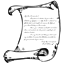
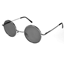
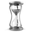
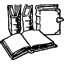

¡L’arte di unire culture!
|  |  | |
| [Servizi] | [Specializzazioni] | [Nosotros] |
|
Noi di Marabotto Traduzioni comprendiamo le esigenze dei nostri clienti. Lavoriamo dunque per offrirvi un servizio linguistico integrale all’altezza delle vostre aspettative. |
| Traduzioni - Inglese, spagnolo, francese, tedesco, portoghese, italiano e catalano, tra le lingue con cui lavoriamo. | ||
|  | Lavori express - Traduzioni urgenti durante tutto l’anno. | |
| Traduzioni giurate - Traduzioni giurate effettuate da periti traduttori. | ||
| Interpretazione simultanea e consecutiva - Interpreti e noleggio di attrezzature e impianti. |
|  | Settori principali - Oltre 15 anni di esperienza in traduzione legale, finanziaria, letteraria, scientifica e pubblicitaria. |
| Team di lavoro - Traduttori madrelingua. Non facciamo semplicemente traduzioni, SIAMO traduttori professionisti. | |
| Strumenti professionali - Uso di strumenti di traduzione assistita ( i cosiddetti strumenti CAT, per la sigla in inglese), come Trados e Wordfast: database personali che appoggiano il traduttore nell’omogeneizzazione della terminologia specialistica. Con l’aiuto di tali strumenti riusciamo a snellire il processo traduttivo e a renderlo di maggior qualità. |
| ONGs - Le organizzazioni non governative possono richiedere il nostro programma di traduzioni volontarie e a tariffe ridotte. |